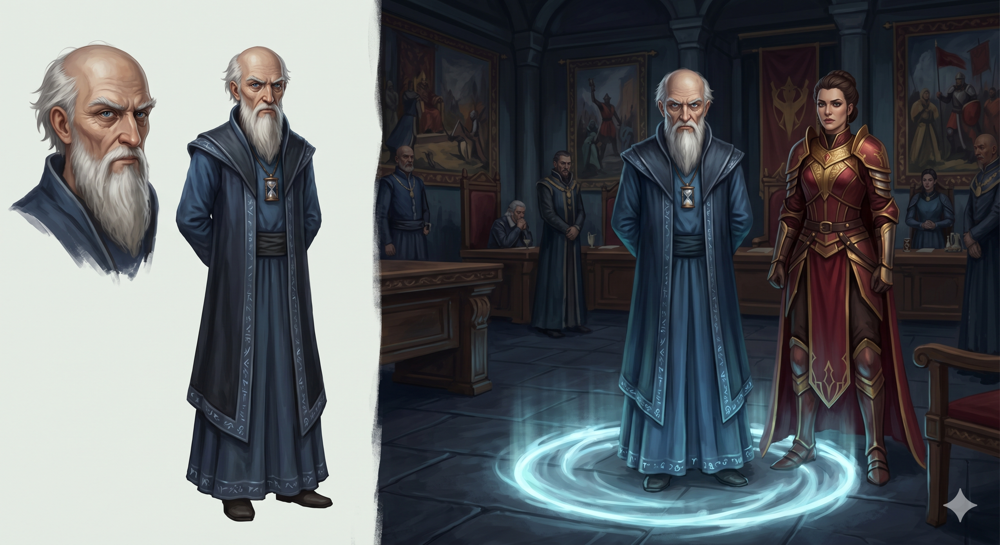

Appears in: Couch Potato Chaos (minor), Couch Potato Crisis (major)
Profile

-
Appears in: Couch Potato Chaos (minor), Couch Potato Crisis (major)
-
Role: Chief advisor to [Queen [Aralynn Murderjoy](./character-queen-aralynn-murderjoy.html)](./character-queen-aralynn-murderjoy.html), level 67 time mage. Gelkorus does most of the actual governing of Zhakara and is the architect behind the queen’s rise to power.
-
Personality: Pragmatic, politically shrewd, and quietly cunning. Gelkorus is the rare person in Murderjoy’s court who understands how to survive the queen’s mercurial temperament – he navigates her randomness by giving bad news through paid proxies (like Paula the messenger girl, whom the queen incinerates instead of punishing him), and by knowing when to stay silent versus when to offer counsel. When the queen laughs maniacally, he simply stands looking uncomfortable, having learned that joining in unprompted can be fatal. He is capable of genuine politeness and even warmth – he treats Kiwi with surprising respect during her recapture and keeps his promise not to hunt her companions – but this civility is tactical rather than moral. He is a behind-the-scenes operator who genuinely wants what is best for Zhakara, which in his view means peace pursued through shadow manipulation rather than open warfare. His secret desire for peace with Questgivria is something he would never voice aloud at court, instead framing it as “strategic ceasefire.” Despite his failures costing him Murderjoy’s trust, his warp and time-magic utility makes him indispensable – she relegates him to the far end of the conference table rather than dismissing him.
-
Backstory: Gelkorus is the true architect of Queen Murderjoy’s reign. Fourteen years before Crisis, King Markus Reiser the Third died without naming an heir, leaving Zhakara’s houses divided and civil war looming. Gelkorus sought a strong unifying leader. He tracked down Aralynn, an orphan and Orb of Fire bearer with no noble blood – a woman of terrifying, monstrous will who had given birth to and abandoned a daughter. Gelkorus fought Aralynn for over three hours until her orb power faded and she collapsed. Rather than killing her, he was moved by her ferocious strength of will and returned the Orb of Fire to her. He offered to make her queen, adopting her into the Murderjoy house and convincing the divided houses that an orb bearer on the throne was preferable to leaving it empty. From that day forward, Aralynn was queen – and because she let her advisors handle the actual governance, she was “one of Zhakara’s better leaders.” Gelkorus was able to guide her toward suspending the war with Questgivria and may have achieved permanent peace had Tasha’s group not killed the queen at the Spiral Tower in Chaos. The queen’s post-resurrection personality shift – more headstrong, less willing to listen to his counsel – is the great tragedy of Gelkorus’s later career.
-
Significant story events:
- Chapter 42 — Knight of Ghosts and Shadows (Chaos): First appearance. Gelkorus reports to Murderjoy near the ravine that a dungeon has despawned, possibly killing the princess inside. Pan observes him from hiding as “my most trusted lieutenant.” He coordinates patrols along the ravine.
- Chaos (throne room scenes): Receives orders to send incrementally stronger waves of assassins after Kiwi’s party – Murderjoy’s plan to level them up so Kiwi can claim the Orb of Life. Gelkorus doesn’t understand the logic but complies, starting with underpowered scouts to gauge Kiwi’s level. He warns against using charm magic as “forbidden” and likely to spur retaliation, but is overruled.
- Absconded Princess / Prologue (Crisis): Arrives at the Slaver camp with Kiwi floating unconscious behind him. Hands over advance payment to Benton’s slaver team and insists on speed in delivering the princess to [Penfold’s lab](./location-mines-of-bahg-taldur.html). Orders Fin and Mara’s slave brands removed to avoid tracing. Warns “no more slaves during this job.” Warps away, accidentally carrying [Trista Twinklebottom](./character-trista-twinklebottom.html) (hidden in Pan’s portable hole) to Zhakara.
- Chapter 9 — The Sorceress of the South (Crisis): Murderjoy discovers Gelkorus has been using Paula as a bad-news proxy. She is simultaneously furious and grudgingly impressed (“How surprisingly ruthless of him. I clearly haven’t given him enough credit”). She reads his report that he lost the princess and orders him not to return without recovering Kiwi.
- The Sorceress of the South (Crisis, Gelkorus-Paula conversation): Reveals his full backstory to Paula over soda and chips. Explains how he found Aralynn, fought her, made her queen, and laments that her post-resurrection personality has made her unmanageable. He admits to wanting peace with Questgivria but being too politically savvy to say so openly.
- Chapter 12 — McBreakfast Sandwiches (Crisis): Tracks Kiwi to the abandoned town. Approaches her calmly and offers respectful negotiation – acknowledging his own failure in letting her escape previously. Promises not to hunt Fin, Mara, and Trista in exchange for Kiwi’s cooperation. Places a collar on her and warps her to [Penfold’s lab](./location-mines-of-bahg-taldur.html), keeping his word about her companions. His conduct here is almost gentlemanly, revealing a man who would prefer to resolve things without unnecessary cruelty.
- Chapter 29 — The Gathering (Crisis): Demoted to the far end of the conference table for his failures. Still offers sound strategic advice – agreeing with Kiwi about the Knight of Entropy threat and cautioning against a naval invasion while Blobby’s whereabouts are unknown. Logan openly mocks him as “an old has-been.” Gelkorus detects the massive mana surge of [General Kegan](./character-general-kegan.html)'s world-tier spell.
- The End of Zhakara (Crisis): Present at the final battle. Casts Warp to evacuate the queen. Pan identifies him as a level 67 time mage and observes his warp bubble countdown.
-
Notable Quotes:
“Gelkorus never really knew exactly how to act when the queen was laughing maniacally. Sometimes she asked him to join in, and other times she incinerated people who laughed without being asked, so he just stood there looking uncomfortable until she finished.” — Chapter 42, Knight of Ghosts and Shadows (Chaos). Narration capturing his survival instincts.
“The failure was mine. Well done on your escape, but your days of doing as you wish have come to an end.” — Chapter 12, McBreakfast Sandwiches (Crisis). Gelkorus acknowledges Kiwi’s achievement with surprising grace before recapturing her.
“I’m not so foolish as to say that aloud in court. In a kingdom such as ours, peace can only be accomplished from the shadows.” — Chapter 9, The Sorceress of the South (Crisis). Gelkorus explains his philosophy of governance to Paula.
“I’d offer them a headstart, but…I’m a time mage, so it wouldn’t prove much regarding my intentions.” — Chapter 12, McBreakfast Sandwiches (Crisis). A dry, self-aware aside when offering Kiwi his promise not to hunt her companions.
“In her last life, the queen was easy to manipulate. She was more concerned with her pet projects than actually ruling. I was able to guide her toward suspending the war with Questgivria.” — Chapter 9, The Sorceress of the South (Crisis). Gelkorus reveals the scope of his behind-the-scenes influence over Zhakaran policy.
-
Relationships:
- [Queen [Aralynn Murderjoy](./character-queen-aralynn-murderjoy.html)](./character-queen-aralynn-murderjoy.html) (sovereign, complicated loyalty): Gelkorus made Aralynn queen and genuinely respected the controllable version of her. After her resurrection, she became harder to manage, and he lost her trust through his failures – but his warp magic keeps him indispensable. He sits at the far end of the table rather than beside her. He is the only person who calls her by her first name (to Paula, in private).
- Paula the messenger girl (informant, protege): Gelkorus pays Paula to deliver bad news to the queen, knowing Murderjoy incinerates the messenger. He trusts her enough to share state secrets, including the story of how he made Aralynn queen. Their scenes together over soda and chips are the most human and unguarded Gelkorus ever appears.
- Princess Kiwistafel (captive, respectful antagonist): Gelkorus treats Kiwi with a degree of respect unusual for a Zhakaran official – he acknowledges her escape as his failure and keeps his promise not to hunt her companions. He tells her honestly that the queen does not wish her harmed.
- Logan (rival advisor): A younger, handsomer advisor who has replaced Gelkorus in the queen’s favor. Logan openly mocks him as “an old has-been,” but Gelkorus’s strategic instincts prove sounder than Logan’s.
- [Doctor Theodore Penfold](./character-doctor-theodore-penfold.html) (colleague): Gelkorus coordinates with Penfold’s operations, delivering Kiwi to the lab and working within the queen’s scientific-military apparatus.
- [General Kegan](./character-general-kegan.html) (opposing time mage): Both are time mages on opposite sides of the conflict. Their shared discipline places them in implicit opposition – Kegan commanding the assault against Zhakara while Gelkorus provides warp logistics for its defense.
- Pan Branford (observer): Pan identifies Gelkorus by his scan ability during the End of Zhakara battle, noting his level 67 time mage status and the countdown on his warp bubble.
-
References: Couch Potato Chaos: Knight of Ghosts and Shadows | Couch Potato Crisis: Absconded Princess, McBreakfast Sandwiches, The End of Zhakara, The Gathering, The Grey Room, The Sorceress of the South